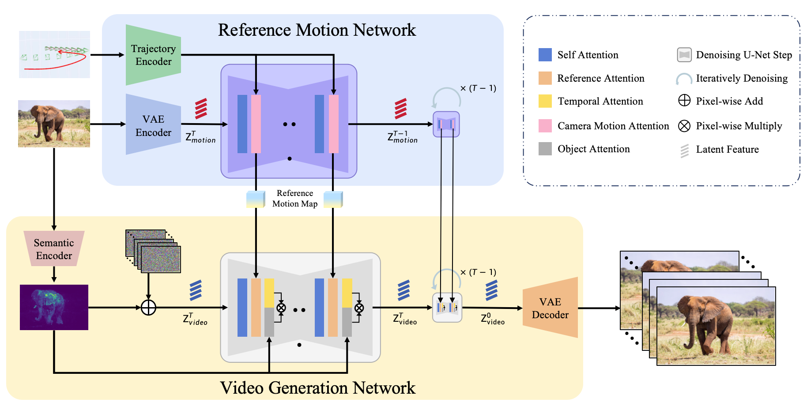

🧙♂️ MOTIONFLOW: Learning Implicit Motion Flow for Complex Camera Trajectory Control in Video Generation
Abstract
Generating videos guided by camera trajectories poses significant challenges in achieving consistency and generalizability, particularly when both camera and object motions are present. Existing approaches often attempt to learn these motions separately, which may lead to confusion regarding the relative motion between the camera and the objects. To address this challenge, we propose a novel approach that integrates both camera and object motions by converting them into the motion of corresponding pixels. Utilizing a stable diffusion network, we effectively learn reference motion maps in relation to the specified camera trajectory. These maps, along with an extracted semantic object prior, is then fed into an image-to-video network to generate the desired video that can accurately follow the designated camera trajectory while maintaining consistent object motions. Extensive experiments verify that our model outperforms SoTA methods in a large margin.
Overview
The overview of MotionFlow. Our framework is mainly constituted with two parts. In the Reference Motion Net, the camera trajectory is initially encoded using Pose Encoder and added to the reference model using camera motion attention with the reference image to get the reference motion priors. For the video diffusion process stage, firstly semantic features are extracted through the Motion Extractor for calculate the object attention and also fused with multi-frame noise. Secondly, reference pixel motion are integrated through reference attention. In addition, Temporal Modules are utilized to manipulate the temporal dimension to ensure consistency of generated video.
Visualization Results